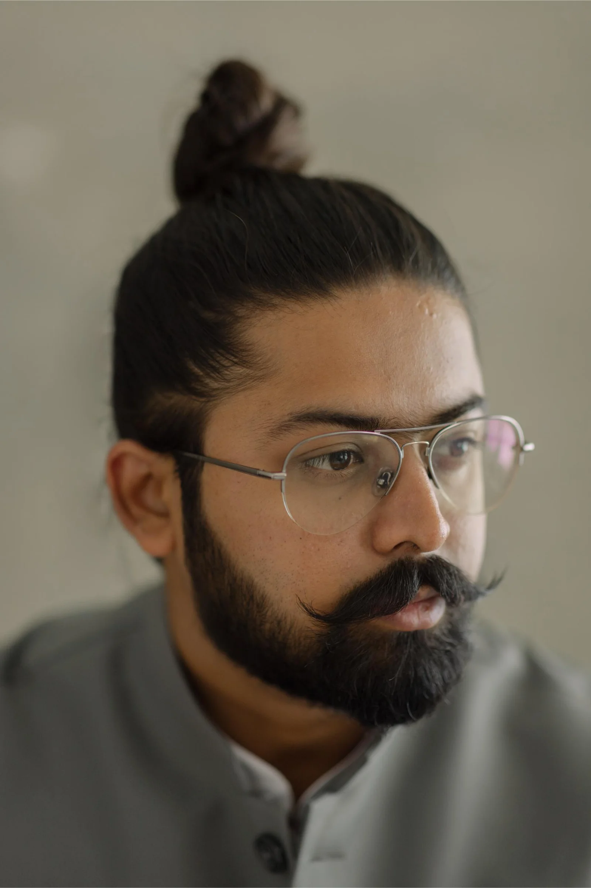

BEYOND LIFE / OUR STORY
Meet the storyteller.
Behind every story is someone who sees it.
THE PERSON BEHIND THE LENS
A little about
the storyteller.

FOUNDER
Hitesh Jain
Beyond Life Productions
I'm a traveler, learner and a self-taught filmmaker with a passion for storytelling.
Since the early days, I was fascinated with cinema and its magic on screen. I was amazed how one story could touch so many hearts. This is how I discovered my first love, filmmaking.
As I traveled, people and places became my food for thought. I had begun on a journey of developing the craft of narrating stories through the powerful medium of audio-visuals.
BEYOND LIFE PRODUCTIONS / STORIES WORTH RELIVING
THE STORY BEHIND BEYOND LIFE
A Wedding Is
Not Just An Event
It is the marriage of emotions amongst two families.
It became my window to explore a variety of stories, cultures & traditions. When I look back at the process of making such films and stitching the moments together, I could see visuals that were beyond words, beyond emotions, beyond actions.
I realised the magic in the madness of creating films that will stay with families beyond life. This is how the name 'Beyond Life' created itself.
EXPLORE THE FILMS ↗04 / HOW WE SEE YOUR STORY
We look for what happens
between the moments.
We don't just capture how your wedding looked.
We look for how it felt.
- THE GLANCES
- The emotions that happen without words.
- THE PEOPLE
- The relationships that make it meaningful.
- THE DETAILS
- The little things that bring your day together.
- THE UNEXPECTED
- No one planned it. Everyone remembers it.